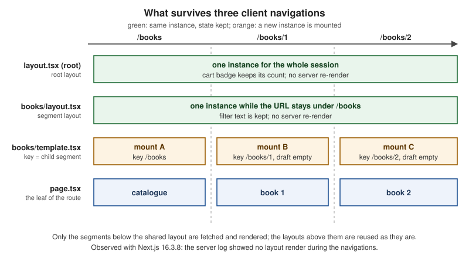

Layouts, Templates & Special Files
|
This content was generated with the assistance of AI and should be verified against the official documentation before being relied on in production. |
This page is written against Next.js 16.3.8 (the latest release on 2026-10-03, when the facts and examples below were
checked; the official documentation reports @doc-version 16.3.8), React 19.3.0, Node.js 20.9.0 or later and
TypeScript 5.1 or later. It covers the App Router in depth, because the special files described here are an App
Router feature, and it closes with the Pages Router equivalents (app, _document, 404, 500, _error).
Caching changes only one thing about these files, how loading.js and a layout that reads request data behave, and the
page shows that difference explicitly: every example was built with the previous model (cacheComponents off, the
default today) and the one place where Cache Components (cacheComponents: true) behaves differently was built both
ways. Everything was built with next build and served with next start in a scratch copy of the _Bookshelf, the
catalogue of books that this section grows; state persistence and remounting were observed in a real headless
Chromium, and status codes were read with curl.
The page answers four questions: which files does a route segment accept, in which order are they nested, which React boundary does each one create (and therefore what does it catch), and what survives a navigation. The Project Structure page lists the same files as part of the folder layout and shows the minimal hierarchy; here every file gets its own contract, its pitfalls and a worked example. The sibling routing pages of this section (routing fundamentals, dynamic routes and route groups, parallel and intercepting routes) cover the folders that these files live in; they are named in plain prose where they matter. For the React ideas underneath (error boundaries, Suspense, state preservation across renders), see React Routing and Server Rendering, SSG and React Server Components.
The Special Files at a Glance
A route segment (a folder under app) is given UI and behaviour by files with reserved names. Only page (or route)
makes the segment public; all the others decorate or guard it. Each file default-exports a React component, and each
sits at a fixed place in a fixed nesting order.
| File | What it creates | Component type and props | Introduced |
|---|---|---|---|
|
UI shared by the segment and everything below it; persists across navigations, keeps state, does not re-render |
Server Component by default; |
13.0 |
|
Like a layout, but with a key so that its children remount on navigation |
Server Component by default; |
13.0 |
|
A React |
Server Component by default (may be a Client Component); no props |
13.0 |
|
A React error boundary around the page and nested segments |
Client Component (required); |
13.0 |
|
An error boundary that replaces the root layout when it fails |
Client Component with its own |
13.1 |
|
The UI for |
Server Component by default; no props |
13.0 (root handles unmatched URLs from 13.3) |
|
A 404 page that bypasses every layout (experimental flag) |
Server Component returning a whole document; no props |
15.4 |
|
The UI for |
Server Component by default; no props |
15.1 |
|
The UI for |
Server Component by default; no props |
15.1 |
|
The fallback of a parallel-route slot (and of |
Server Component; async |
with parallel routes; required for every slot since 16.0 |
|
The leaf: a UI or an HTTP endpoint that makes the segment public |
|
13.0 ( |
Source: File-system conventions and the version history at the bottom of each page named in the references
The .js in the names stands for any of .js, .jsx and .tsx; the examples use .tsx. The rest of the page takes
the files in nesting order, from the outside in.
The Component Hierarchy and the Boundaries It Creates
Inside one segment the files are nested in this order, from the outside in: layout, template, error, loading,
not-found (which shares its position with forbidden and unauthorized), and finally page or the layout of the
next segment. The components of a segment are nested inside the components of its parent segment. The diagram applies
that rule to the route /books/1 of the Bookshelf built later on this page; boxes are boundaries, and a box only
protects what is inside it.
replaces the root layout when it fails"] subgraph RL["app/layout.tsx - root layout (html, body, header)"] subgraph RN["app/not-found.tsx, forbidden.tsx, unauthorized.tsx
HTTP-access boundary of the root segment"] subgraph BL["app/books/layout.tsx - catalogue layout"] subgraph BT["app/books/template.tsx - key changes with the child segment"] subgraph BE["app/books/error.tsx - error boundary"] subgraph BS["app/books/loading.tsx - Suspense boundary"] subgraph BN["app/books/not-found.tsx - HTTP-access boundary"] subgraph PG["app/books/[id]/page.tsx"] RB["ReviewsBoundary - catchError, component level"] RB --> RV["Reviews component"] end end end end end end end end GE -.-> RL
Reading the diagram from the inside out tells you what each file can catch:
-
An error in
Reviewsis caught byReviewsBoundary, the innermost boundary, so the book title stays on screen. -
An error in
page.tsxitself is caught byapp/books/error.tsx. The books layout and the template are outside that boundary, so the filter box and the review draft stay where they were. -
An error thrown by
app/books/layout.tsxorapp/books/template.tsxis not caught byapp/books/error.tsx, because the error boundary is inside them. The nexterror.jsabove takes it, and for the root layout that isglobal-error.js. -
notFound(),forbidden()andunauthorized()render the nearest file of the matching name above the throwing component.app/books/not-found.tsxsits inside the books layout, so the filter box stays; the root-levelforbidden.tsxsits outside it, so the filter box goes with the books layout. -
The
<Suspense>boundary made byloading.jswraps the page and the segments below it, but not the layout or template of its own segment. A slow layout is therefore never covered by that segment’s loading UI.
The flowchart in the worked example later on summarises which file answers each kind of failure.
Source: Component hierarchy
Root Layout and Nested Layouts
A layout is UI that wraps a segment and everything below it. It default-exports a component that renders its
children, which are the next layout down or the page.
The root layout is the topmost layout of the app folder. It is required, and it is the only place where <html>
and <body> are written: Next.js does not generate them. The Bookshelf root layout also hosts a header with a client
component (a cart counter) that will show why layouts matter:
import type { Metadata } from "next";
import Link from "next/link";
import { CartBadge } from "@/app/_components/cart-badge";
export const metadata: Metadata = {
title: { default: "Bookshelf", template: "%s | Bookshelf" },
};
export default function RootLayout({ children }: { children: React.ReactNode }) {
console.log("[render] RootLayout");
return (
<html lang="en">
<body>
<header>
<Link href="/">Bookshelf</Link> <Link href="/books">Books</Link>
<CartBadge />
</header>
{children}
</body>
</html>
);
}"use client";
import { useState } from "react";
// Client state that lives in the root layout: it survives every navigation.
export function CartBadge() {
const [items, setItems] = useState(0);
return (
<button onClick={() => setItems((n) => n + 1)} data-testid="cart">
Cart: {items}
</button>
);
}The rules of the root layout, from the official reference:
-
It must define
<html>and<body>. -
Do not write
<head>tags such as<title>and<meta>by hand there; exportmetadataorgenerateMetadata, which the Metadata API streams and de-duplicates (themetadataexport above sets a title template). -
It may sit under a dynamic segment, for example
app/[locale]/layout.tsxfor internationalisation. Dynamic segments above the root layout are root parameters, andnext/root-paramsreads them from any Server Component (shipped in 16.3). The real Bookshelf does exactly this; the scratch app of this page drops the locale to keep the tree small. -
It cannot call
forbidden()orunauthorized().
A nested layout is any layout file below the root. The catalogue layout renders a filter box (client state) next to
whatever the child segments render:
import { CatalogueFilter } from "./_components/catalogue-filter";
export default function BooksLayout({ children }: { children: React.ReactNode }) {
console.log("[render] BooksLayout");
return (
<section>
<aside>
<CatalogueFilter />
</aside>
<div>{children}</div>
</section>
);
}"use client";
import { useState } from "react";
// A filter box in the layout: whatever the reader typed stays while they navigate.
export function CatalogueFilter() {
const [text, setText] = useState("");
return (
<input
aria-label="Filter the catalogue"
data-testid="filter"
value={text}
onChange={(e) => setText(e.target.value)}
/>
);
}Props: children, params and the typed helper
A layout receives children (required) and params, a promise of the dynamic parameters from the root segment down to
that layout. Await it in an async layout, or read it with React’s use in a Client Component. Reading params
synchronously was deprecated in 15 and removed in 16. LayoutProps<'/route'> is a globally available type helper,
generated by next dev, next build or next typegen, that types params and also every parallel-route slot of the
folder as a named prop:
export default async function RootLayout({
children,
params,
}: LayoutProps<"/[locale]">) {
const { locale } = await params;
return (
<html lang={locale}>
<body>{children}</body>
</html>
);
}Source: layout.js: props
Layouts persist: state is kept, nothing re-renders
Layouts are not re-rendered on navigation. Moving between pages that share a layout keeps the layout mounted: its
client state, its DOM and its focus survive, and the server is not asked to render it again. The scratch run below
used the files above. A reader fills in the filter, adds two items to the cart counter, and moves through the
catalogue with <Link> (client navigations):
| Navigation | Cart (root layout) | Filter (books layout) | Draft (template) | Server log |
|---|---|---|---|---|
Load |
2 |
|
|
the layouts render once for the load |
Click to |
2 |
|
empty (remounted) |
no render lines |
Click back to |
2 |
|
empty (remounted) |
no render lines |
Click to |
2 |
|
empty (remounted) |
no render lines |
Click to |
2 |
the filter is gone (unmounted) |
gone |
no render lines |
The cart counter survives even a navigation out of the catalogue because it lives in the root layout. The console.log
lines in the layout files ([render] RootLayout and so on) were added only to count server renders; the log showed
nothing during the four navigations. Remove them in real code.

Source: Layouts and pages ("On navigation, layouts preserve state, remain interactive, and do not rerender")
What a layout cannot do
Because layouts are reused, three things are deliberately unavailable to them, and each has a standard workaround.
| A layout cannot | Why | Do this instead |
|---|---|---|
Read |
It would go stale: the layout does not re-render when the query string changes. |
Read the page’s |
Read the current pathname |
Same reason. |
Call |
See the segments below it |
A layout only knows its own place in the tree. |
Call |
Pass data to its children |
Data flows through props only, and a layout has no handle on its `children’s props. |
Fetch the same data where it is needed: |
Read the raw request |
Next.js keeps user code out of the shared layout so it stays cheap to reuse. |
Use |
A navigation-aware link is the usual reason to want the segment. The example below renders the active state without making the layout re-render, because the hook runs in a Client Component:
"use client";
import Link from "next/link";
import { useSelectedLayoutSegment } from "next/navigation";
export function NavLink({ slug, children }: { slug: string; children: React.ReactNode }) {
const segment = useSelectedLayoutSegment(); // the segment just below this layout
const active = slug === segment;
return (
<Link href={`/books/${slug}`} aria-current={active ? "page" : undefined}>
{children}
</Link>
);
}Source: layout.js: caveats and useSelectedLayoutSegment
Templates and Their Remount Keys
A template wraps a layout’s children just as a layout does, but with one difference that changes everything: each
navigation gives the template a new instance. Next.js gives it a key equal to the next segment, so the Client
Components inside it lose their state, their effects run again, and their DOM is rebuilt. In the component hierarchy
the template sits between the layout and the error boundary; it wraps error, loading, not-found and page, but
not the layout of its own segment.
import { ReviewDraft } from "./_components/review-draft";
// Rendered between the layout and the page, with a key that changes with the
// next segment: the draft is reset (a new mount) for every book.
export default function BooksTemplate({ children }: { children: React.ReactNode }) {
console.log("[render] BooksTemplate");
return (
<>
{children}
<ReviewDraft />
</>
);
}"use client";
import { useEffect, useState } from "react";
export function ReviewDraft() {
const [draft, setDraft] = useState("");
useEffect(() => {
// Re-synchronises on every mount, so it runs again after a template remount.
console.log("review draft mounted");
}, []);
return (
<textarea
aria-label="Review draft"
data-testid="draft"
value={draft}
onChange={(e) => setDraft(e.target.value)}
/>
);
}The behaviour, as the reference states it and as the table above confirmed (the draft emptied on each move between
/books, /books/1 and /books/2, and the effect logged "review draft mounted" every time):
-
The key belongs to the template’s own segment level. A template remounts when its child segment, including a dynamic parameter value, changes. Navigations deeper in the tree do not remount a template higher up.
-
Search parameters do not trigger a remount.
-
A template is a Server Component by default, so the examples keep state in a small Client Component inside it.
Use a template when you need to:
-
reset the state of a child Client Component on navigation (a form field, a draft, a filter);
-
re-run an effect on each navigation (page-view tracking, focus management, scroll restoration for the content area);
-
change the framework default for
<Suspense>: boundaries placed in a layout show their fallback only on the first load, while those in a template show it on every navigation.
Prefer a layout otherwise; the persistence of layouts is usually what you want. Templates cost a remount per navigation and make Client Component state in them short-lived by design.
The official page walks through a tree with a root template and a blog template: going from / to /about remounts
the root template; going from /blog to /blog/first-post leaves the root template alone but remounts the blog
template, because the child segment at that level changed.
Source: template.js
loading.js: A Suspense Boundary From a File
loading.js wraps the page and the nested segments in a React <Suspense> boundary and uses its own component as the
fallback. While the page’s data streams in, the browser shows the fallback and the shared layout stays interactive. The
fallback is prefetched, so the navigation feels immediate, and the navigation is interruptible: a reader can click
somewhere else without waiting.
export default function Loading() {
return <p data-testid="loading">Loading books...</p>;
}It is the same boundary you can write by hand around a component with <Suspense fallback={…}>; use the file for the
whole segment and the component for finer parts of the page.
Where the layout is not covered
loading.js sits below the layout, so it cannot cover a layout that waits for request data (cookies(), headers(),
an uncached fetch). What happens depends on the caching model:
| Model | Observed with Next.js 16.3.8 | Fix |
|---|---|---|
Previous model ( |
The route is dynamic ( |
Move the request-data access into the page, or wrap it in its own |
Cache Components ( |
|
Wrap the data access in |
The fix that worked under both models:
import { Suspense } from "react";
import { cookies } from "next/headers";
async function ThemeBadge() {
const theme = (await cookies()).get("theme")?.value ?? "light";
return <p>Theme: {theme}</p>;
}
export default function DashLayout({ children }: { children: React.ReactNode }) {
return (
<section>
<Suspense fallback={<p>Theme: ...</p>}>
<ThemeBadge />
</Suspense>
{children}
</section>
);
}Status codes and streaming
When a response streams, the status code is sent with the first bytes, before the page has finished. A loading.js
fallback makes the response stream, so notFound(), forbidden() and unauthorized() thrown after that point
cannot change the status: it stays 200, and Next.js adds <meta name="robots" content="noindex"> so that crawlers do
not index the page. The table in the not-found section shows the effect with real numbers. If a real 404 matters for
compliance or analytics, check the resource before streaming starts, for example in proxy.ts, or keep the check
before any boundary that suspends.
Source: loading.js
error.js and global-error.js
error.js wraps the segment’s page and nested segments in a React error boundary. When something under it throws while
rendering, the boundary shows the file’s component instead. Error boundaries must be Client Components, so the file
starts with 'use client'.
"use client";
export default function BooksError({
error,
retry,
}: {
error: Error & { digest?: string };
retry: () => void;
}) {
return (
<div data-testid="books-error">
<h2>The catalogue is unavailable</h2>
{error.digest && <p>Reference: {error.digest}</p>}
<button onClick={() => retry()}>Try again</button>
</div>
);
}Its props are:
-
error: the error. Errors from Client Components arrive with their original message. Errors from Server Components arrive in production with a generic message and adigest, a hash that you can search for in the server logs, so that internals never reach the browser (in development the message is included). -
retry: asks Next.js to re-fetch and re-render the boundary’s children, and replaces the fallback when it works. Use this for temporary failures. It is the recommended way to recover. -
reset: clears the error state and re-renders the children without re-fetching. It cannot fix a failure that happened in a Server Component; use it only when you have a specific reason.
The scratch run with a simulated outage (/books/outage throws in the page) rendered app/books/error.tsx inside the
books layout, with the cart, the filter and the draft all intact; the Reference line printed the digest. The HTTP
status was 200 because the segment has a loading.tsx (the response was already streaming), and 500 when the same
failure occurred on a route without a boundary that streams.
retry is the stable name; unstable_retry is history
Before 16.2 the prop was called reset only. Version 16.2 added unstable_retry and unstable_catchError; version
16.3.0 made them stable as retry and catchError. In 16.3.8 the props object that a segment’s error component receives
has exactly three keys: error, reset and retry. The old unstable_ names are only mentioned in the version
history of the official pages, so new code uses the stable names and code written against 16.2 should be renamed when
upgrading.
global-error.js: the root layout’s safety net
error.js is inside the layout and template of its own segment, so it cannot catch their errors, and the root
layout has no error.js above it. app/global-error.js handles that case. It replaces the root layout while it is
active, so it must render its own <html> and <body>, and it cannot use metadata exports (use the React <title>
component). It does not include your global styles or theme either. Since 15.2 it also appears in development.
"use client";
export default function GlobalError({ retry }: { error: Error & { digest?: string }; retry: () => void }) {
return (
// Replaces the root layout while active, so it needs its own <html> and <body>.
<html lang="en">
<body>
<h1>Bookshelf is having trouble</h1>
<button onClick={() => retry()}>Try again</button>
</body>
</html>
);
}To check it, the scratch root layout was made to throw on request (an environment variable read at request time); the
server answered 500 and the browser rendered the global-error UI.
catchError: a boundary for part of a page
error.js protects whole segments. For a component that can fail on its own (a reviews widget, an external embed),
catchError from next/error builds a boundary component you place anywhere in a Client Component tree. Compared with
a hand-written class boundary it re-renders through retry() in a transition (so Client Component state outside the
boundary survives), it lets redirect() and notFound() pass through instead of catching them, and its error state
clears on a client navigation.
"use client";
import { catchError, type ErrorInfo } from "next/error";
function ReviewsFallback({ title }: { title: string }, { retry }: ErrorInfo) {
return (
<div data-testid="reviews-fallback">
<h3>{title}</h3>
<button onClick={() => retry()}>Try again</button>
</div>
);
}
// A component-level error boundary: the rest of the page keeps working.
export const ReviewsBoundary = catchError(ReviewsFallback);import { notFound } from "next/navigation";
import { getBook } from "@/lib/books";
import { ReviewsBoundary } from "./_components/reviews-boundary";
import { Reviews } from "./_components/reviews";
export default async function BookPage({ params }: PageProps<"/books/[id]">) {
const { id } = await params;
if (id === "outage") throw new Error("catalogue database unavailable"); // simulated failure
const book = await getBook(id);
if (!book) notFound();
return (
<article>
<h1 data-testid="book">{book.title}</h1>
<p>{book.author}</p>
<ReviewsBoundary title="Reviews are unavailable">
<Reviews bookId={book.id} />
</ReviewsBoundary>
</article>
);
}On /books/3 (the simulated reviews outage) the page rendered the book title and the boundary’s fallback, the
catalogue filter and the cart stayed in place, and the segment’s error.tsx was not involved.
Source: error.js, catchError and Error handling
not-found, forbidden and unauthorized
Three files render the UI for an HTTP-style interruption. All three are Server Components by default (they may be
async) and take no props. They are created by calling a function that throws, so call it in the render path (a
component, or a function that a component awaits) and do not return it.
| Function | File | Status | Notes |
|---|---|---|---|
|
|
404 (200 when streamed) |
Stable. Also serves unmatched URLs when it is the root |
|
|
403 |
Experimental in 16.3.8: needs |
|
|
401 |
Experimental in 16.3.8: needs |
not-found.js
import Link from "next/link";
export default function BookNotFound() {
return (
<div data-testid="books-nf">
<h2>We do not have that book</h2>
<Link href="/books">Back to the catalogue</Link>
</div>
);
}import Link from "next/link";
export default function NotFound() {
return (
<main data-testid="nf">
<h1>Page not found</h1>
<Link href="/">Go home</Link>
</main>
);
}The root app/not-found.js handles two cases: a thrown notFound() that no deeper file catches, and any URL that no
route matches. The deeper file in the example above keeps the catalogue layout around the message. In the scratch run
without it, a missing book replaced the whole books layout (the filter box disappeared), because the root
boundary sits outside that layout; adding app/books/not-found.tsx kept the layout. Place the file at the level whose
chrome you want to keep.
An experimental global-not-found.js (introduced in 15.4, enabled with experimental.globalNotFound) renders a complete
document for unmatched URLs and skips all layouts. It exists for apps that have several root layouts or a root layout
under a dynamic segment, where no single layout can compose a 404 page; it is covered in the multiple-root-layouts section.
forbidden.js and unauthorized.js
unauthorized() means "this request is not signed in" (401), forbidden() means "signed in, but not allowed" (403).
Both render the nearest file of the matching name above the throwing component, with noindex, and both can be called
from Server Components, Server Functions and Route Handlers. They are experimental in 16.3.8, so enable them:
import type { NextConfig } from "next";
const nextConfig: NextConfig = {
experimental: { authInterrupts: true },
};
export default nextConfig;Without the flag, calling them fails at request time (observed): the server logs "`unauthorized()` is experimental and
only allowed to be used when experimental.authInterrupts is enabled" and the response is a 500.
The check itself belongs in a data access layer, not in the page, so that every caller applies the same rule. The scratch version below maps an opaque session id (kept on the server) to a role; the real check, with signed sessions, is the subject of the authentication pages of this section.
import "server-only";
import { cache } from "react";
import { cookies } from "next/headers";
// Stand-in for the real Data Access Layer: maps an opaque session id (kept on the
// server) to a role. A real application validates a signed or stored session.
const sessions = new Map([
["demo-reader-session", { userId: "reader-1", role: "reader" as const }],
["demo-admin-session", { userId: "admin-1", role: "admin" as const }],
]);
export const getSession = cache(async () => {
const id = (await cookies()).get("session")?.value;
return id ? (sessions.get(id) ?? null) : null;
});import { forbidden, unauthorized } from "next/navigation";
import { getSession } from "@/lib/dal";
export default async function AdminPage() {
const session = await getSession();
if (!session) unauthorized(); // 401: not signed in
if (session.role !== "admin") forbidden(); // 403: signed in, not allowed
return <h1>Admin dashboard</h1>;
}export default function Forbidden() {
return <main data-testid="forbidden"><h1>You may not see this page</h1></main>;
}import Link from "next/link";
export default function Unauthorized() {
return (
<main data-testid="unauthorized">
<h1>Please sign in</h1>
<Link href="/sign-in">Sign in</Link>
</main>
);
}The interruption files are UI, not security. They change what is shown after the check has run on the server; the protection is the check in the data access layer (and the same check in every Server Function and Route Handler). Never rely on a layout, a template or a client-side guard to protect data: layouts are not re-rendered on navigation, so a check placed there does not run again.
Source: not-found.js, forbidden.js, unauthorized.js, forbidden() and authInterrupts
Status codes, measured
The same curl run against next start gave these results. The right-hand column is the one to remember: where the
check happens relative to the first byte decides the status.
| Request | Status | Why |
|---|---|---|
|
200 |
Normal render. |
|
404 |
The root |
|
200 |
The response was already streaming when the page threw. |
|
200 |
Same reason; the error boundary renders in the browser. |
|
401 |
|
|
403 |
|
|
200 |
The page. |
A page that throws, in a route without |
500 |
The failure happens before the first byte, so the status can still change. |
A layout that throws ( |
500 |
Caught client-side by the root |
The root layout throws |
500 |
|
The experiment with a plain page and no loading.tsx confirmed the 404, 401 and 403 values. The practical rule: put
the access check before any await that can suspend, and do not put a loading.js above a page whose status matters to
crawlers.
default.js: The Fallback of a Parallel Slot
A parallel route is a named slot (a folder starting with @) that a layout renders as a prop next to children.
During a client navigation Next.js remembers which sub-page each slot shows; after a full page load it cannot, and a slot
that has no page matching the current URL needs a fallback. That is default.js. Since 16.0 every slot must have one,
and children is an implicit slot, so it needs one as well whenever its parent page cannot be recovered; otherwise the
build fails, or the route returns 404.
A minimal layout with a stats slot, built to check the behaviour:
app/team/
├── layout.tsx # renders {children} and {stats}
├── page.tsx # /team
├── settings/page.tsx # /team/settings (no matching page in @stats)
└── @stats/
├── page.tsx # the slot at /team
└── default.tsx # the fallback for every other URLWithout @stats/default.tsx, next build stopped with this error:
Error: Missing required default.js file for parallel route at /team/@stats
The parallel route slot "@stats" is missing a default.js file. When using parallel routes, each slot must
have a default.js file to serve as a fallback.
Create a default.js file at: /team/@stats/default.js
https://nextjs.org/docs/messages/slot-missing-defaultWith the fallback in place:
export default function StatsDefault() {
return <p>stats default</p>;
}The two navigations then behave differently, which is the point of the file (observed):
| How you arrive | children |
@stats slot |
|---|---|---|
Load |
team settings |
stats default (from |
Click from |
team settings |
stats overview (the slot keeps its previous active state) |
To get the old behaviour of a 404 instead of a fallback, have default.tsx call notFound(). default.js receives an
async params like a layout. Intercepting routes and modal patterns use the same mechanism and are covered by the
parallel-and-intercepting routes page of this section; the @modal/default.tsx of the full Bookshelf is the same
file.
Source: default.js and slot-missing-default
Multiple Root Layouts
Any layout with no layout.js above it is a root layout, and an app may have several. There are two ways to get them:
route groups such as app/(shop)/layout.tsx and app/(admin)/layout.tsx (the group names are not in the URL), or no
app/layout.js at all so that app/dashboard/layout.js and app/blog/layout.js each become a root. Each root layout
writes its own <html> and <body>:
import Link from "next/link";
// app/(shop)/layout.tsx
export default function ShopLayout({ children }: { children: React.ReactNode }) {
return (
<html lang="en">
<body>
<nav><Link href="/">Shop</Link> <Link href="/books">Books</Link> <Link href="/admin">Admin</Link></nav>
{children}
</body>
</html>
);
}
// app/(admin)/layout.tsx has the same shape with its own chrome:
// <html lang="en"><body className="admin">...{children}</body></html>Navigating across root layouts is a hard navigation: the browser performs a full page load. Within one root
layout, navigation stays client-side. Measured with a marker set on window before the click:
| Navigation | Marker on window |
|---|---|
|
kept, so it was a client navigation |
|
gone, so it was a full page load |
Two consequences follow. Put the sections whose chrome differs in different roots only when the full load is
acceptable. And an app with several roots has no single layout in which to compose a 404 page; an unmatched URL then
shows the framework’s default "404: This page could not be found." page. The experimental global-not-found.js
fixes that:
import type { NextConfig } from "next";
const nextConfig: NextConfig = {
experimental: { globalNotFound: true },
};
export default nextConfig;export const metadata = { title: "404 - Bookshelf" };
export default function GlobalNotFound() {
return (
<html lang="en">
<body>
<h1 data-testid="global-nf">404 - this page does not exist</h1>
</body>
</html>
);
}With the flag on, /nope answered 404 with the custom <title> and body. The file bypasses rendering, so import any
global CSS and fonts it needs itself; it also does not read an app-level theme.
Source: layout.js: root layout, global-not-found.js and the Project Structure page for the folder side of the same decision
Worked Example: The Bookshelf Segment
The files above form one working tree. It is the part of the Bookshelf that this page needs: a root layout with a
client cart, a catalogue segment with a layout, a template, a loading UI, an error boundary and a not-found file, a book
page with a component-level boundary, and an admin page guarded by unauthorized() and forbidden().
app/
├── layout.tsx # root layout: html, body, header, CartBadge
├── page.tsx # /
├── not-found.tsx # 404 for unmatched URLs and uncaught notFound()
├── forbidden.tsx # 403 UI
├── unauthorized.tsx # 401 UI
├── global-error.tsx # replaces the root layout when it fails
├── _components/cart-badge.tsx
├── admin/page.tsx # /admin: unauthorized() / forbidden()
└── books/
├── layout.tsx # catalogue layout (filter box)
├── template.tsx # remounts a review draft per book
├── loading.tsx # Suspense fallback
├── error.tsx # error boundary
├── not-found.tsx # not-found inside the layout
├── page.tsx # /books
├── _components/ # private: catalogue-filter, review-draft
└── [id]/
├── page.tsx # /books/1
└── _components/ # private: reviews, reviews-boundaryapp/books/page.tsx and the Reviews component complete the picture:
import Link from "next/link";
import { listBooks } from "@/lib/books";
export default async function BooksPage() {
const books = await listBooks();
return (
<ul>
{books.map((book) => (
<li key={book.id}>
<Link href={`/books/${book.id}`}>{book.title}</Link>
</li>
))}
</ul>
);
}import { listReviews } from "@/lib/books";
export async function Reviews({ bookId }: { bookId: string }) {
if (bookId === "3") throw new Error("reviews service unavailable"); // simulated failure
const reviews = await listReviews(bookId);
return <p data-testid="reviews">{reviews.length} reviews</p>;
}next build listed the routes as a static /books, a dynamic /books/[id] and /admin, and the route / and
/_not-found as static:
Route (app)
┌ ○ /
├ ○ /_not-found
├ ƒ /admin
├ ○ /books
└ ƒ /books/[id]
○ (Static) prerendered as static content
ƒ (Dynamic) server-rendered on demandThe flowchart summarises which file answers each situation in this tree:
app/books/not-found.tsx, else app/not-found.tsx"] kind -- "forbidden()" --> fb["Nearest forbidden.js above the thrower
app/forbidden.tsx"] kind -- "unauthorized()" --> ua["Nearest unauthorized.js above the thrower
app/unauthorized.tsx"] kind -- "any other Error" --> where{"Where was it thrown?"} where -- "inside a catchError boundary" --> ce["Its fallback
ReviewsBoundary"] where -- "page or nested segment" --> er["Nearest error.js above the thrower
app/books/error.tsx"] where -- "layout or template of that same segment" --> up["The next error.js above that segment;
none in the Bookshelf, so global-error.tsx"] nf --> st{"Was the response already streaming?"} fb --> st ua --> st st -- "no" --> code["Status 404, 403 or 401"] st -- "yes, loading.js sent a fallback" --> ok["Status 200 plus noindex"]
Putting it together, the observed behaviour of the whole tree (every row from a real next start run):
| Action | Result |
|---|---|
Click |
The count stays 2 everywhere: the root layout never remounts. |
Type in the catalogue filter, then move between book pages |
The text stays: the books layout persists while the URL is under |
Type in the draft box, then open another book |
The draft empties: the template remounts for each child segment. |
Open |
The book title and the "Reviews are unavailable" fallback; filter and cart untouched. |
Open |
|
Open |
|
Open |
|
Open |
401, 403 and the dashboard (200). |
Source: layout.js, template.js, loading.js, error.js, not-found.js, unauthorized.js and forbidden.js
The Pages Router Equivalents
The Pages Router has no nested layouts, no per-segment boundaries and no template, but it has equivalents for the
important pieces. This is the same Bookshelf shell in the pages folder (verified with next build and next start
in its own scratch project).
import type { AppProps } from "next/app";
import Link from "next/link";
import { useState } from "react";
export default function MyApp({ Component, pageProps }: AppProps) {
const [items, setItems] = useState(0);
return (
<>
<header>
<Link href="/">Bookshelf</Link> <Link href="/books">Books</Link>
<button onClick={() => setItems((n) => n + 1)}>Cart: {items}</button>
</header>
<Component {...pageProps} />
</>
);
}import { Html, Head, Main, NextScript } from "next/document";
export default function Document() {
return (
<Html lang="en">
<Head />
<body>
<Main />
<NextScript />
</body>
</Html>
);
}// pages/404.tsx
export default function Custom404() {
return <h1>404 - Page Not Found</h1>;
}
// pages/500.tsx
export default function Custom500() {
return <h1>500 - Server-side error occurred</h1>;
}import type { NextPageContext } from "next";
function CustomError({ statusCode }: { statusCode?: number }) {
return (
<p>{statusCode ? `An error ${statusCode} occurred on server` : "An error occurred on client"}</p>
);
}
CustomError.getInitialProps = ({ res, err }: NextPageContext) => {
const statusCode = res ? res.statusCode : err ? err.statusCode : 404;
return { statusCode };
};
export default CustomError;In the scratch project: after two clicks on the cart and a client navigation from / to /books the count was still 2
(_app persists), /nope and a page returning { notFound: true } from getServerSideProps both answered 404 with the
custom 404 page, and an error thrown in getServerSideProps or during rendering answered 500 with pages/500.tsx.
Because 500.tsx existed, _error.tsx was not used for those errors; it is the catch-all for other status codes. The
build lists /404 and /500 as static pages and /_app without a route.
| Concern | App Router | Pages Router |
|---|---|---|
Shared UI that persists |
|
|
|
The root layout |
|
Reset state per navigation |
|
No file; give |
Loading UI |
|
No file convention; client-side state or router events |
Error boundary per segment |
|
None built in; write a React error boundary in |
Last-resort error |
|
|
404 |
|
|
401 and 403 |
|
None; set the status or redirect yourself |
Parallel slot fallback |
|
Not applicable |
Source: Custom App, Custom Document, Custom errors and Pages and layouts
getInitialProps in _app disables Automatic Static Optimization for pages without getStaticProps, which is why the
official page discourages it; the introduction page compares the
two routers as a whole and explains how to migrate one route at a time.
What Changed Since Next.js 13 and 14
The files of this page appeared with the App Router in 13.0 and have been refined since. These are the changes you will meet when reading older code or books.
| Version | Change |
|---|---|
13.0 |
|
13.1 |
|
13.3 |
The root |
15.0 |
|
15.1 |
|
15.2 |
|
15.4 |
|
16.0 |
Synchronous access to |
16.2 |
|
16.3 |
|
Version tags are from the official version-history tables of each page and from the upgrade guides; the 16.0 default.js
requirement was also reproduced in the scratch build error shown earlier. forbidden and unauthorized were still
labelled experimental in the 16.3.8 documentation and still require the authInterrupts flag.
Where the Books Are Outdated
The two consulted books describe Next.js 12 and 13 era projects, mostly built on the Pages Router. For the topics of this page:
| What the books show or imply | Current approach |
|---|---|
One |
The App Router has native nested layouts; |
|
In the App Router the root layout writes |
|
Per-segment |
An |
|
Reading |
|
Authorization by redirect in a client hook, or only by |
Check on the server in the data access layer; |
Treating every non-200 response as a failure of the page |
With streaming, |
Common Pitfalls
| Symptom | Cause | Fix |
|---|---|---|
A layout does not update when the query string or the URL changes |
Layouts do not re-render on navigation. |
Read |
State survives a navigation when you wanted it reset |
The component lives in a layout. |
Move it to a |
State is lost on every navigation when you wanted it kept |
The component lives in a template (or sits in a page). |
Move it to a layout. |
|
The boundary is inside the layout and the template of its segment. |
Put the |
|
It replaces the root layout and must provide |
Add the document tags and import what it needs; use the React |
|
Error boundaries must be Client Components. |
Add |
The "Try again" button does nothing for a Server Component failure |
|
Call |
The whole layout disappears when a page calls |
The nearest |
Add a |
The page returns 200 for a missing resource |
A |
Check before the first suspending |
|
The experimental flag is off. |
Set |
|
It was called in an un-awaited promise, or inside a |
Always |
|
Since 16.0 every slot needs one. |
Add |
|
Cache Components: |
Wrap the access in |
A click between two sections reloads the whole page |
The sections use different root layouts. |
Expected; move the sections under one root layout if client navigation matters. |
|
The root layout must not render |
Export |
Layout data cannot be passed to the page |
Layouts cannot pass props to their children. |
Fetch in both places; |
Related Material on This Site
-
Introduction and Architecture for the two routers and the request flow.
-
Project Structure for the folder layout, route groups and the final Bookshelf layout.
-
Getting Started for the first layout and page.
-
React Routing and Server Rendering, SSG and React Server Components for the React side.
-
NestJS vs Next.js for the same Bookshelf with a NestJS back end.